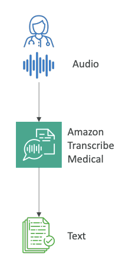
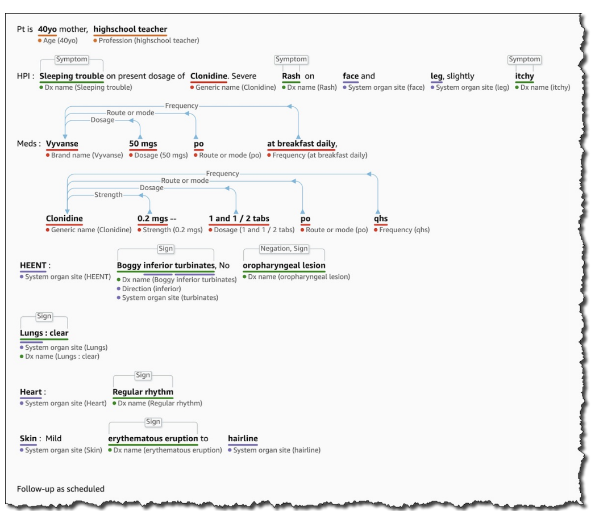

Now, let's talk about AI services for the medical space. We've seen Amazon Transcribe, but there is a version of it that is specifically geared for this field.
Amazon Transcribe Medical
This service allows you to automatically convert medical-related speech into text. It is specialized for the medical space because it is HIPAA compliant, which means you can use it in regulated environments. When your audio goes through Amazon Transcribe Medical, you get text that specializes in medical terminologies.

-
It understands terms like:
-
Medicine names
-
Procedures
-
Conditions and diseases
-
-
It supports Transcription Options like:
-
Real-time: Use a microphone to transcribe live speech.
-
Batch: Upload audio files for transcription.
-
-
Use Cases:
-
Create voice applications that enable physicians to dictate medical notes.
-
Transcribe phone calls that report on drug safety and side effects.
-
Amazon Comprehend Medical
Once you have text from the audio, you can do even more with Amazon Comprehend Medical, which is a version of Amazon Comprehend for the medical space. This service detects and returns useful information from your text by using Natural Language Processing (NLP).
-
It understands documents like:
-
Physician's notes
-
Discharge summaries
-
Test results
-
Case notes
-
-
Key Features:
-
It can detect Protected Health Information (PHI) to ensure you are not sharing information you shouldn't.
-
Data can be sourced from Amazon S3.
-
It offers a real-time analysis feature using Kinesis Data Firehose.
-
You can combine it with Amazon Transcribe Medical to create a complete flow from audio to comprehension.
-
Example: From Unstructured to Structured Data
If we pass audio that has been transcribed into Comprehend Medical, it is able to understand the full relationships between all the words.

For example, from the text "40-year-old mother," it can understand the age and profession. For a medicine, it can identify the name, dosage, and frequency.
Thanks to Comprehend Medical, we can take text that is very unstructured and use it to create a very structured pattern.(see image below)
